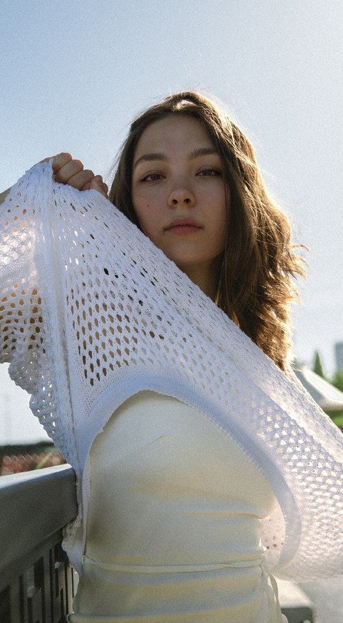

Обо мне
Софья.
Фотограф в Казани.
Снимаю с школьных лет.
Изучаю свет, композицию и разные техники съёмки.
Ищу себя в портрете, семье и творческих историях.

Мой путь
Снимаю с школьных лет.
Путь начался с простого: снимать для себя, в наслаждение.
Дальше - камера, первые коммерческие съёмки и важный вывод: лучшие кадры рождаются, когда забываешь о деньгах и ловишь кайф.
Сегодня это уверенный уровень: работаю с людьми, а не с позами.
Помогаю раскрыться, разрешить жить тому, что спрятано внутри.
Снимок для меня - не нажатие кнопки, а способ сохранить фото в сейф вашего сердца (Save the photo to the safe of your heart)
Снимаю так, чтобы вы узнали себя. (ред.)
Снимаю так,
чтобы вы узнали себя.
Помогаю раскрыться, разрешить жить тому, что спрятано внутри.
08 Контакты
Давайте создадим
вашу историю.
Пишите!
Подберём..
Подберём образ, локацию и удобное для вас время!